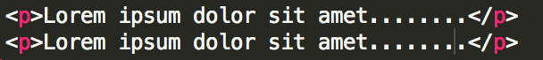
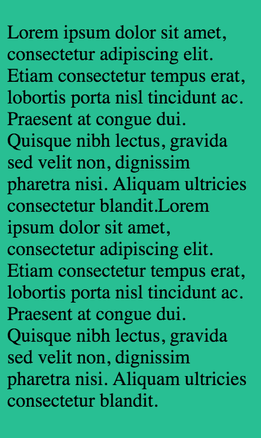
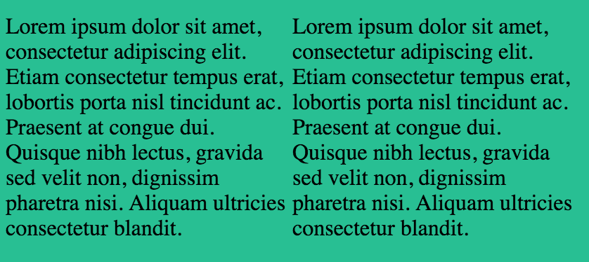

Blog archive
|
Inline vs Inline blocks
An inline element has no line break before or after it.
An inline-block element is placed as an inline element (on the same line as adjacent content), but it behaves as a block element. Example:While using display: inline; the two paragraph flow together as a single paragraph.While using display: inline block; the two paragraphs appear right next to each other. |